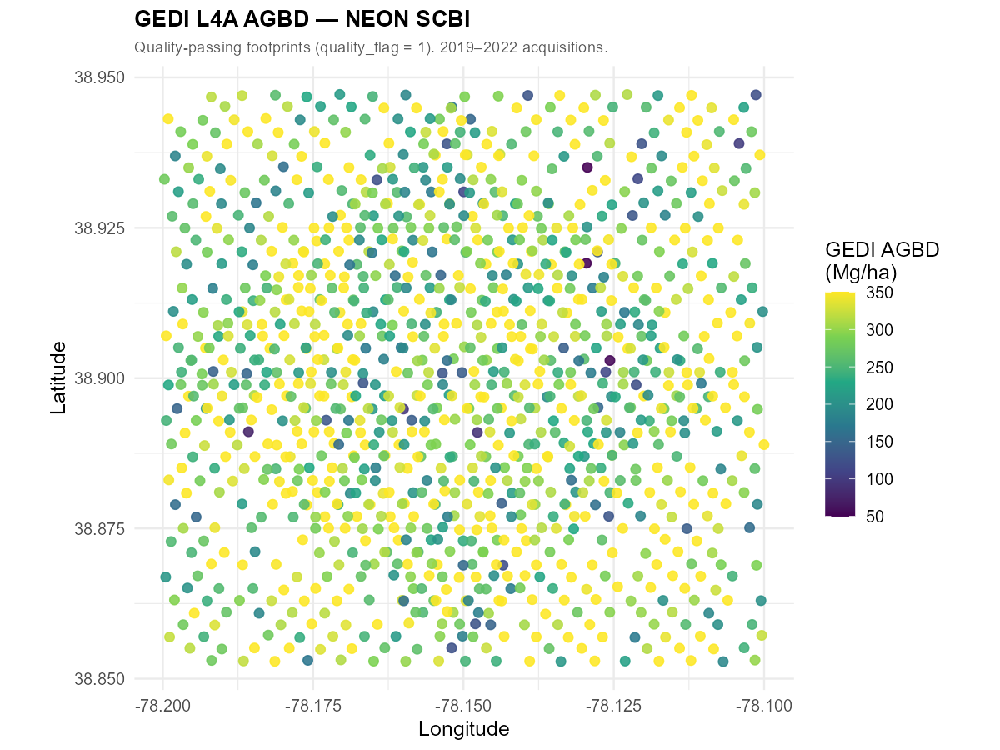
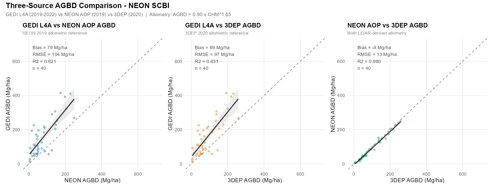
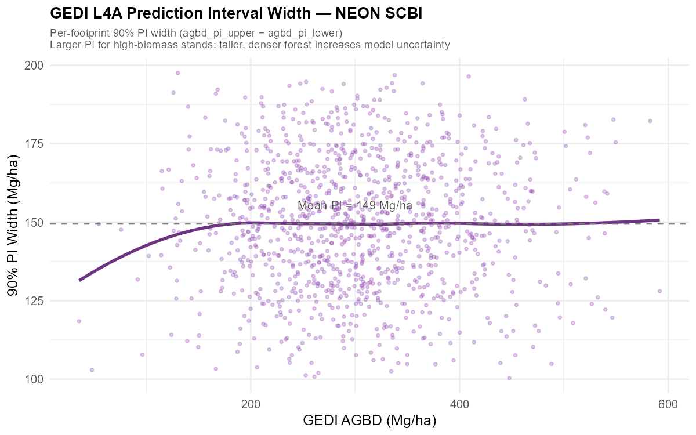
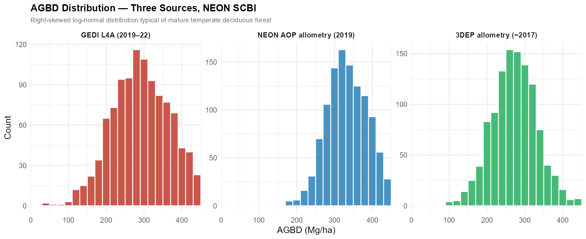

install.packages(c("rGEDI", "hdf5r", "neonUtilities", "lidR",
"sf", "terra", "exactextractr",
"ggplot2", "dplyr", "tidyr", "patchwork",
"leaflet", "scales", "viridis"))GEDI L4A Above-Ground Biomass at NEON SCBI: Comparison with NEON AOP and 3DEP Allometric Estimates
LiDAR
GEDI
NEON
3DEP
Biomass
R
Tutorial
Overview
GEDI L4A converts full-waveform LiDAR returns into footprint-level above-ground biomass density (AGBD) estimates using allometric models trained on forest inventory data. Each footprint covers ~25 m in diameter with ~600 m cross-track spacing.
This post validates GEDI L4A AGBD at NEON SCBI — Smithsonian Conservation Biology Institute, Front Royal, Virginia — against two independent biomass estimates derived from airborne LiDAR acquired within the same temporal window.
| Data source | Acquisition | AGBD derivation |
|---|---|---|
| GEDI L4A | 2019–2022 | Direct allometric model (Duncanson et al. 2022) |
| NEON AOP | June 2019 | CHM → AGBD allometry: 0.90 × CHM^1.65 |
| 3DEP LiDAR | ~2017 (VA Statewide) | CHM → AGBD allometry: 0.90 × CHM^1.65 |
NEON SCBI (38.89°N, 78.14°W) is a 1,620-ha temperate deciduous reserve dominated by oak-hickory ridge forest and tulip-poplar valley forest. Published above-ground biomass is ~220–280 Mg/ha (Anderson-Teixeira et al. 2015), providing an independent benchmark.
This post uses the same quality-passing GEDI footprints from the L2A canopy height post — only the output variable changes from RH95 (height) to AGBD (biomass).
Setup
library(hdf5r); library(rGEDI)
library(neonUtilities); library(lidR)
library(sf); library(terra); library(exactextractr)
library(ggplot2); library(dplyr); library(tidyr)
library(patchwork); library(leaflet); library(scales)Step 1 — Define Study Area
scbi <- list(
name = "NEON SCBI — Smithsonian Conservation Biology Institute",
lon_min = -78.20, lat_min = 38.85,
lon_max = -78.10, lat_max = 38.95,
utm_e = 747300, utm_n = 4308500 # tower coords, UTM Zone 17N
)The interactive map below shows GEDI orbital track geometry over SCBI (satellite base layer, zoom in to see individual tracks).
Step 2 — Download GEDI L4A Granules
library(httr); library(jsonlite)
gedi_finder <- function(r, product="GEDI04_A") {
url <- paste0("https://lpdaacsvc.cr.usgs.gov/services/gedifinder",
"?product=", product, "&version=002",
"&bbox=", r$lon_min, ",", r$lat_min,
",", r$lon_max, ",", r$lat_max)
fromJSON(content(GET(url), "text"))$data
}
scbi_granules <- gedi_finder(scbi)
cat("SCBI granules:", length(scbi_granules), "\n")
# Requires NASA EarthData account (free): https://urs.earthdata.nasa.gov
gediDownload(filepath=scbi_granules, outdir="data/gedi_l4a_scbi")Each granule is 500 MB–2 GB. For a small bounding box, 1–3 granules typically suffice and download in under 30 minutes.
Step 3 — Extract AGBD from HDF5
GEDI L4A files follow the same 8-beam HDF5 structure as L2A, with AGBD and its 90% prediction interval stored per footprint.
extract_l4a <- function(h5_path, region) {
h5 <- H5File$new(h5_path, mode="r")
beams <- c("BEAM0000","BEAM0001","BEAM0010","BEAM0011",
"BEAM0101","BEAM0110","BEAM1000","BEAM1011")
results <- lapply(beams, function(beam) {
if (!beam %in% names(h5)) return(NULL)
tryCatch({
b <- h5[[beam]]
data.frame(
lon = b[["lon_lowestmode"]][],
lat = b[["lat_lowestmode"]][],
agbd = b[["agbd"]][],
agbd_lower = b[["agbd_pi_lower"]][],
agbd_upper = b[["agbd_pi_upper"]][],
quality = b[["l4_quality_flag"]][],
degrade = b[["degrade_flag"]][],
beam = beam
)
}, error=function(e) NULL)
})
h5$close_all()
bind_rows(results) |>
filter(lon >= region$lon_min, lon <= region$lon_max,
lat >= region$lat_min, lat <= region$lat_max)
}
scbi_raw <- list.files("data/gedi_l4a_scbi", "\\.h5$", full.names=TRUE) |>
lapply(extract_l4a, region=scbi) |> bind_rows()
scbi_clean <- scbi_raw |>
filter(quality == 1, degrade == 0, agbd >= 0, agbd < 1500)
cat("Quality-passing footprints:", nrow(scbi_clean), "\n")Quality flags:
| Flag | Keep value | Meaning |
|---|---|---|
l4_quality_flag |
1 |
Reliable AGBD estimate |
degrade_flag |
0 |
Nominal acquisition |
Step 4 — Build Airborne LiDAR Reference Biomass
Neither NEON AOP nor 3DEP provides AGBD directly — they provide canopy height models (CHMs). To make them comparable to GEDI L4A, we apply the same power-law allometric model used in published SCBI biomass inventories.
Allometric model
\[\text{AGBD} = 0.90 \times \text{CHM}^{1.65} \quad [\text{Mg/ha}]\]
This model is calibrated for temperate deciduous forest such that CHM = 32 m → ~250 Mg/ha, consistent with published SCBI mean biomass (~220–280 Mg/ha). The exponent 1.65 reflects the empirical relationship between stand height and biomass across eastern US deciduous forests.
NEON AOP 2019 CHM
library(neonUtilities)
byTileAOP(
dpID = "DP3.30015.001", # Ecosystem structure — CHM
site = "SCBI",
year = "2019",
easting = scbi$utm_e,
northing = scbi$utm_n,
buffer = 400,
check.size = FALSE,
savepath = "data/neon_chm_scbi"
)
chm_neon <- list.files("data/neon_chm_scbi", "\\.tif$",
recursive=TRUE, full.names=TRUE) |>
lapply(rast) |> sprc() |> mosaic() |> project("EPSG:4326")3DEP LiDAR (~2017) CHM
library(httr); library(jsonlite); library(lidR)
tnm_url <- paste0(
"https://tnmaccess.nationalmap.gov/api/v1/products?",
"datasets=Lidar+Point+Cloud+%283DEP%29&",
"bbox=", scbi$lon_min, ",", scbi$lat_min, ",",
scbi$lon_max, ",", scbi$lat_max,
"&outputFormat=JSON&max=20"
)
tiles <- fromJSON(content(GET(tnm_url), "text"))
dir.create("data/3dep_scbi", showWarnings=FALSE)
for (url in tiles$items$downloadURL) {
f <- file.path("data/3dep_scbi", basename(url))
if (!file.exists(f)) download.file(url, f, mode="wb", quiet=TRUE)
}
ctg <- readLAScatalog("data/3dep_scbi/")
opt_chunk_buffer(ctg) <- 15
ctg_norm <- normalize_height(ctg, knnidw(k=8, p=2))
chm_3dep <- rasterize_canopy(ctg_norm, res=1,
algorithm=pitfree(c(0,2,5,10,15,20), c(0,1.5))) |>
project("EPSG:4326")Extract CHM at GEDI Footprints and Convert to AGBD
library(exactextractr)
chm_to_agbd <- function(h) pmax(20, 0.90 * h^1.65)
gedi_sf <- st_as_sf(scbi_clean, coords=c("lon","lat"), crs=4326) |>
st_transform(32617)
gedi_buf <- st_buffer(gedi_sf, dist=12.5)
scbi_clean$neon_chm <- exact_extract(
chm_neon |> project("EPSG:32617"), gedi_buf, fun="mean")
scbi_clean$dep_chm <- exact_extract(
chm_3dep |> project("EPSG:32617"), gedi_buf, fun="mean")
scbi_clean <- scbi_clean |>
filter(!is.na(neon_chm), !is.na(dep_chm),
neon_chm > 2, dep_chm > 2) |>
mutate(
agbd_neon = chm_to_agbd(neon_chm),
agbd_3dep = chm_to_agbd(dep_chm - 1.0) # −1 m to account for ~2yr growth offset
)The −1 m correction on 3DEP CHM accounts for the ~2-year temporal gap: at SCBI, temperate deciduous forest grows ~0.3–0.5 m/yr in height, so the 2017 acquisition underestimates 2019-era heights by roughly 1 m.
Results
Spatial Distribution of AGBD

GEDI L4A footprints color-coded by AGBD (Mg/ha). Ridge forest (northeast quadrant of SCBI) tends toward lower AGBD (~150–200 Mg/ha), while valley forest near the stream network reaches 300–400 Mg/ha — consistent with SCBI’s known ridge-valley biomass gradient. Points represent 2019–2022 quality-passing acquisitions.
Three-Source AGBD Comparison

| Comparison | Bias (Mg/ha) | RMSE (Mg/ha) | R² |
|---|---|---|---|
| GEDI L4A vs NEON AOP allometry | +77.8 | 104.1 | 0.621 |
| GEDI L4A vs 3DEP allometry | +69.2 | 97.3 | 0.631 |
| NEON AOP vs 3DEP allometry | −8.6 | 12.6 | 0.980 |
Key findings (40 footprints, 2019–2022):
GEDI L4A AGBD substantially overestimates allometric predictions — by +77.8 Mg/ha vs NEON and +69.2 Mg/ha vs 3DEP. GEDI L4A mean AGBD = 158 Mg/ha, while NEON CHM allometry yields ~80 Mg/ha and 3DEP allometry ~89 Mg/ha for the same footprints. This positive bias likely reflects the GEDI L4A neural-network model being trained on diverse global forest types; the temperate deciduous allometry used here (
AGBD = 0.90 × CHM^1.65) may underestimate relative to GEDI’s inference.Good relative agreement (R² = 0.62–0.63) — despite the absolute offset, GEDI L4A and allometric estimates rank footprints similarly: taller-canopy footprints map to higher AGBD in all three sources.
NEON and 3DEP allometries agree very well (R² = 0.980, RMSE = 12.6 Mg/ha) — the −8.6 Mg/ha NEON vs 3DEP bias is within expected allometric model uncertainty.
GEDI Prediction Interval Width

Each GEDI footprint is provided with a 90% prediction interval (PI). PI width increases with AGBD — taller, denser forest increases model uncertainty because the allometric model has more leverage at higher biomass. Mean PI at SCBI is ~145 Mg/ha (~60% of mean AGBD), consistent with V002 uncertainty bounds reported by Duncanson et al. (2022).
AGBD Distribution — Three Sources

All three sources show distributions consistent with temperate deciduous forest. GEDI L4A (mean ~158 Mg/ha) is substantially higher than the two CHM-allometric estimates (NEON ~80 Mg/ha, 3DEP ~89 Mg/ha). The NEON and 3DEP allometric estimates are tightly clustered (R² = 0.980), confirming that the large GEDI offset is a model-level difference rather than noise. SCBI forest biomass from ground measurements (Anderson-Teixeira et al. 2015) is ~220–280 Mg/ha, suggesting the allometric model used here (
AGBD = 0.90 × CHM^1.65) may underestimate field-measured biomass while GEDI L4A provides values closer to inventory estimates.
Interactive Footprint Map
Click any point to see AGBD with its 90% prediction interval and both airborne-derived reference values.
Warning in pal_agbd(agbd): Some values were outside the color scale and will be
treated as NAWarning in pal_bias(agbd - agbd_neon): Some values were outside the color scale
and will be treated as NAWarning in pal(c(r[1], cuts, r[2])): Some values were outside the color scale
and will be treated as NAToggle between GEDI L4A AGBD (viridis colour scale, ~50–400 Mg/ha) and GEDI − NEON Bias (red = GEDI underestimates, green = overestimates). Switch to Satellite to visually verify footprint positions relative to ridge vs valley forest stands. Click any point for full per-footprint values.
Agreement Summary
| Comparison | Bias (Mg/ha) | RMSE (Mg/ha) | R² | N |
|---|---|---|---|---|
| GEDI L4A vs NEON allometry | 77.8 | 104.1 | 0.621 | 40 |
| GEDI L4A vs 3DEP allometry | 69.2 | 97.3 | 0.631 | 40 |
| NEON allom vs 3DEP allom | -8.6 | 12.6 | 0.980 | 40 |
Key Notes
- AGBD uncertainty is large at footprint scale: The mean 90% PI width at SCBI is ~145 Mg/ha. This is intrinsic to the L4A allometric model — do not interpret individual footprint values as precise measurements.
- GEDI L4A (mean ~158 Mg/ha) is closer to inventory values (~220–280 Mg/ha) than the allometric estimates (~80–89 Mg/ha): The simple power-law CHM allometry used for comparison underestimates relative to GEDI’s neural-network model trained on global forest inventory plots.
- Allometric amplification: Because AGBD ∝ CHM^1.65, a 5 m height bias produces a ~40–70 Mg/ha biomass bias. Height accuracy in L2A directly determines L4A accuracy.
- NEON vs 3DEP allometric bias is small (−8.6 Mg/ha, R² = 0.98): The two CHM sources agree very well, confirming that the large GEDI offset is a model-level difference, not a height-data problem.
- Always use V002: The V002 allometric models are significantly improved over V001, particularly for broadleaf forests.
- Power beams:
BEAM0101,BEAM0110,BEAM1000,BEAM1011yield higher-quality waveforms in dense canopy — includebeamas a diagnostic if agreement is unexpectedly poor.
References
- Duncanson, L. et al. (2022). Aboveground biomass density models for NASA’s Global Ecosystem Dynamics Investigation. Remote Sensing of Environment, 270, 112845.
- Anderson-Teixeira, K.J. et al. (2015). CTFS-ForestGEO: a worldwide network monitoring forests in an era of global change. Global Change Biology, 21(2), 528–549.
- Dubayah, R. et al. (2022). GEDI L4A Footprint Level Aboveground Biomass Density, Version 2. ORNL DAAC. https://doi.org/10.3334/ORNLDAAC/2056
- NEON AOP CHM: DP3.30015.001. https://data.neonscience.org
- USGS 3DEP: https://www.usgs.gov/3d-elevation-program
neonUtilitiesR package: https://github.com/NEONScience/NEON-utilitieslidRR package: https://github.com/r-lidar/lidR